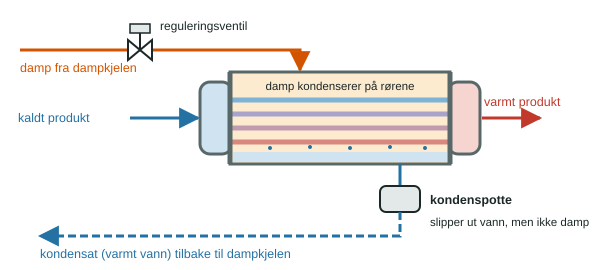

Kjøling og kondensering
Varmen som kjøles bort fra prosessen, må havne et sted. I de fleste anlegg går den til et kjølevannssystem. På denne siden lærer du hvordan kjølevannet sirkulerer, hvordan en kondensator gjør damp om til væske, og hvordan damp brukes til å varme opp.
Hva kan vi kjøle med?
En kjøler er en varmeveksler der den kalde strømmen er et kjølemedium. De vanligste er
- vann: ferskvann fra et vassdrag eller sjøvann. Vann tar opp mye varme og er billig. Det er det vanligste kjølemediet i prosessindustrien.
- luft: i en luftkjøler. Den brukes der det er lite vann.
- kjølemaskin: Skal noe kjøles ned under temperaturen på vannet eller lufta, trengs en kjølemaskin. Den virker som en varmepumpe, men her er det den kalde siden vi bruker.
Kjølevannssystemer
Kjølevann kan brukes på to måter:
- Gjennomstrømning: Vannet pumpes inn fra sjøen eller elva, går gjennom kjølerne én gang og slippes ut igjen litt varmere. Det er enkelt, men krever mye vann. Varmt utslipp kan også påvirke livet i sjøen eller elva, så utslippet er regulert. Sjøvann er salt og etsende, og det kan vokse skjell og alger i rørene. Kjølere for sjøvann lages derfor ofte av titan.
- Sirkulerende krets med kjøletårn: Det samme vannet sirkulerer om og om igjen. Det henter varme fra kjølerne og blir kjølt ned igjen i et kjøletårn. I kjøletårnet er vannet i direkte kontakt med lufta.
Et lukket kjølevannssystem er en krets der vannet aldri er i kontakt med lufta. Mange norske anlegg bruker en slik krets med ferskvann gjennom prosessutstyret. Ferskvannet kjøles igjen av sjøvann i en platevarmeveksler av titan. Da kommer sjøvannet bare i kontakt med én varmeveksler, og resten av anlegget slipper salt og begroing.
![Skisse av en kjølevannskrets. Til venstre et kjøletårn med vifte på toppen. Varmt vann, for eksempel 35 grader, kommer inn i et rør øverst i tårnet og sprutes ut gjennom dyser. Vannet renner ned gjennom et fyllmateriale og ned i et basseng i bunnen. Luft kommer inn nederst på siden og blåses ut på toppen som varm, fuktig luft. Fra bassenget pumper en pumpe kaldt vann, for eksempel 25 grader, til en kjøler og en kondensator i prosessen. Fra disse går det varme vannet tilbake til toppen av kjøletårnet. Det er også en pil for etterfylling av vann inn i bassenget og en pil for avtapping fra bunnen av bassenget.](bilder/kjolevannskrets.svg)
Slik virker kjøletårnet
Det varme vannet sprutes ut over et fyllmateriale øverst i tårnet. Fyllmaterialet er plater eller gitter av plast som får vannet til å spre seg i tynne lag. En vifte suger luft inn nederst og blåser den ut på toppen. Når lufta strømmer forbi vannet, fordamper litt av vannet. Fordampingen tar varme fra resten av vannet, som blir kaldere. Det kalde vannet samles i et basseng i bunnen og pumpes tilbake til kjølerne.
Det er dette du ser som en hvit sky over et kjøletårn. Det er ikke røyk, men vanndamp som kondenserer til små dråper i den kalde lufta.
Fordi noe vann fordamper hele tiden, må det fylles på nytt vann. Det kalles etterfylling. Saltene i vannet fordamper ikke, så de blir igjen og blir mer og mer konsentrert. Derfor tappes litt av vannet ut hele tiden. Det kalles avtapping. Vannet tilsettes også kjemikalier som hindrer kalk, rust og bakterievekst. Det kalles vannbehandling.
Hvor kaldt vannet blir, avhenger av hvor varm og fuktig lufta er. Det er fordampingen som kjøler, så i tørr luft kan vannet faktisk bli litt kaldere enn lufta. Det klarer ikke en luftkjøler. Varm og fuktig luft gir dårligere kjøling, så kjøletårnet kjøler dårligere en varm og fuktig sommerdag.
Legionella er en bakterie som trives i vann på ca. 20–45 °C, og som kan gi en alvorlig lungebetennelse. Et kjøletårn har varmt vann og sprer små dråper med lufta. Derfor kan bakteriene spres over store avstander. I 2005 fikk flere titalls personer legionellasykdom i Sarpsborg og Fredrikstad, og ti døde. Smitten kom fra en luftskrubber ved en fabrikk, som i likhet med et kjøletårn sprer vanndråper i lufta. Anlegg med kjøletårn skal derfor ha rutiner for vannbehandling og rengjøring, og det tas jevnlige prøver av vannet. Bruk åndedrettsvern når du arbeider inne i et kjøletårn.
Kondensatoren
En kondensator er en varmeveksler som kjøler damp slik at den blir væske. Væsken som dannes, kalles kondensat. Du møter kondensatoren igjen på toppen av en destillasjonskolonne. Den finnes også etter inndampere og tørkere, og i kraftverk.
I en vanlig kjøler synker temperaturen på produktet etter hvert som det kjøles. I en kondensator er det annerledes. Så lenge dampen av et rent stoff, for eksempel vann, kondenserer, holder den seg på kokepunktet. Varmen som tas bort, er fordampingsvarmen som dampen fikk da den ble laget. For vann er det ca. 2260 kJ per kilo, mye mer enn det trengs for å kjøle vannet noen grader. En kondensator trenger derfor mye kjølevann.
Ofte går dampen på kappesiden av en rørkjelvarmeveksler, og kjølevannet går i rørene. Kondensatet renner ned og samles i bunnen.
Luft i kondensatoren
Kommer det luft eller andre gasser som ikke kondenserer, inn i kondensatoren, legger de seg som et lag rundt rørene. Laget hindrer dampen i å komme fram til de kalde flatene, og kondensatoren virker dårligere. Derfor har kondensatoren en lufting der slike gasser kan slippe ut.
Vakuum fra kondensatoren
Damp tar mer enn tusen ganger så stor plass som den samme mengden vann. Når dampen kondenserer i en lukket kondensator, blir den derfor nesten borte, og trykket faller. Slik kan en kondensator lage vakuum. En vakuumpumpe trengs mest for å lage vakuum ved oppstart og for å fjerne lufta som lekker inn. Dette brukes i vakuumdestillasjon og i vakuuminndampere, der man vil koke ved lav temperatur.
Damp som varmekilde
Det motsatte av å kjøle med en kondensator er å varme med damp. Mange anlegg har en dampkjel som lager damp, og et nett av damprør ut til utstyret som skal varmes. Damp er et godt varmemedium av to grunner:
- Den gir fra seg mye energi per kilo når den kondenserer.
- Den kondenserer ved en fast temperatur som avhenger av trykket. Ved høyere damptrykk blir temperaturen høyere, se Kokepunktet avhenger av trykket. Operatøren kan derfor styre temperaturen ved å styre damptrykket.

Kondenspotten
Kondensatet som dannes, må hele tiden fjernes. Blir det stående, dekker det rørene, og da varmer varmeveksleren dårligere. Men dampen skal ikke slippe ut, for da går energien tapt. Løsningen er en kondenspotte. Det er en automatisk ventil som åpner når det kommer vann, og stenger når det kommer damp. Kondenspotter sitter også på lave punkter i damprørene, der kondensat samler seg.
Kondensatet er varmt og rent vann. Det sendes derfor tilbake til dampkjelen, slik at både vannet og varmen brukes på nytt.
En kondenspotte som står fast åpen, slipper ut damp hele tiden og sløser med energi. En som står fast stengt, gjør at varmeveksleren fylles med kondensat og slutter å varme. Begge deler er vanlige feil som operatøren må se etter.
Finn ut hvor varmen fra skolens anlegg eller labutstyr blir av. Går den til kjølevann fra springen, til et lukket system eller til lufta? Hvis du besøker en bedrift, se etter kjøletårn, damprør og kondenspotter.
- Damp gir verre brannskader enn kokende vann, fordi den gir fra seg mye ekstra energi når den kondenserer på huden. Damp fra en lekkasje kan være usynlig nær lekkasjen.
- Vannslag: Kondensat som blir liggende i et damprør, kan bli revet med av dampen i stor fart og slå inn i bend og ventiler med et kraftig smell. Det kan få rør til å sprekke. Åpne damp langsomt, og tøm rørene for kondensat først, slik prosedyren sier.
- Varmt kondensat: Kondensat under trykk er varmere enn 100 °C. Når det slippes ut, koker en del av det med en gang og blir til damp. Hold deg unna utløpet fra kondenspotter.
- Kjølevann inneholder kjemikalier fra vannbehandlingen. Sjekk sikkerhetsdatabladet.
- Før en kondensator, en dampvarmet varmeveksler eller et damprør åpnes, skal det være stengt, trykkløst, tømt og avkjølt, og sikret med lås og merk.
Test deg selv
1. Hvordan blir vannet kaldt i et kjøletårn?
- Det går gjennom en kjølemaskin i bunnen av tårnet.
- Litt av vannet fordamper, og det tar varme fra resten av vannet.
- Det blandes med kaldt vann fra springen.
Fordamping tar opp mye energi. Når litt av vannet fordamper i lufta som strømmer gjennom tårnet, blir resten av vannet kaldere.
2. Hvorfor må det tappes ut litt vann fra bassenget i et kjøletårn hele tiden?
- For å gjøre plass til regnvann
- Fordi saltene blir igjen når vann fordamper, og blir mer og mer konsentrert
- For å senke temperaturen i bassenget
Det er bare vannet som fordamper. Saltene blir igjen. Uten avtapping ville det blitt så mye salter at det dannes kalk og belegg.
3. Hva skjer med temperaturen på dampen mens den kondenserer i en kondensator?
- Den synker jevnt hele veien.
- Den holder seg på kokepunktet så lenge dampen kondenserer.
- Den stiger.
Ved kondensering gir dampen fra seg fordampingsvarmen uten at temperaturen endres. Først når alt er blitt væske, kan væsken kjøles videre.
4. Hva gjør en kondenspotte?
- Den lager damp av kondensatet.
- Den slipper damp ut i lufta hvis trykket blir for høyt.
- Den slipper ut kondensat, men holder dampen inne.
Kondensatet må ut, ellers fylles varmeveksleren med vann. Dampen skal bli inne til den har kondensert og gitt fra seg varmen.
5. En dampvarmet varmeveksler varmer plutselig mye dårligere, selv om damptrykket er normalt. Hva kan være feil?
- Kondenspotten står fast stengt, så varmeveksleren fylles med kondensat.
- Kondenspotten står fast åpen.
- Dampen er for varm.
Kommer ikke kondensatet ut, dekker det rørene, og dampen når ikke fram til flatene. En kondenspotte som står fast åpen, sløser med damp, men varmeveksleren varmer fortsatt.
Ordliste
| Begrep | Forklaring | Engelsk |
|---|---|---|
| kjølevann | Vann som brukes til å ta opp varme fra prosessen i kjølere og kondensatorer. | cooling water |
| kjøletårn | Et tårn der varmt kjølevann kjøles ved at litt av det fordamper i lufta som blåses gjennom. | cooling tower |
| fyllmateriale | Plater eller gitter i et kjøletårn som sprer vannet i tynne lag, slik at det kommer i god kontakt med lufta. | fill |
| etterfylling | Nytt vann som fylles på i en kjølevannskrets for å erstatte vann som har fordampet eller er tappet ut. | make-up water |
| avtapping | Vann som tappes ut av en kjølevannskrets for å hindre at saltene blir for konsentrerte. | blowdown |
| kjølemaskin | En maskin som virker som en varmepumpe og kan kjøle under temperaturen på lufta eller vannet rundt. | chiller |
| kondensator | En varmeveksler som kjøler damp slik at den blir væske. På laben kalles den ofte kjøler. | condenser |
| kondensat | Væske som dannes når damp kjøles, for eksempel vann fra damp som har kondensert i en varmeveksler, eller vann i trykkluftanlegget. | condensate |
| lufting | Et utløp på en kondensator der luft og andre gasser som ikke kondenserer, kan slippe ut. | vent |
| dampkjel | Utstyr som koker vann til damp under trykk, slik at dampen kan brukes til oppvarming. | steam boiler |
| kondenspotte | En automatisk ventil som slipper ut kondensat, men holder dampen inne. | steam trap |
| vannslag | Et kraftig trykkstøt i et rør når væske i fart stoppes brått, for eksempel når kondensat blir revet med av damp og slår inn i et bend. Kalles også væskeslag. | water hammer |
| legionella | En bakterie som trives i varmt vann og kan gi alvorlig lungebetennelse når små vanndråper pustes inn. |
Les mer
- Varme og energi i prosesser (Fysiske prinsipper): regn ut hvor mye varme som trengs for å koke bort eller kondensere en væske.
- Varmepumpe (Fysiske prinsipper): prinsippet bak kjølemaskinen.
- Destillasjonskolonnen: kondensator og koker i en kolonne.
Om kildene: Teksten, eksemplene og figurene på denne siden er laget for dette nettstedet. Opplysningene om legionellautbruddet i 2005 er allment kjente og omtalt av Folkehelseinstituttet. Siden bygger på undervisningsopplegg i kjemiprosess- og laboratoriefag ved Sauda vgs, som er utarbeidet med utgangspunkt i blant annet Kjemien stemmer, Laboranten og åpne nettkilder.